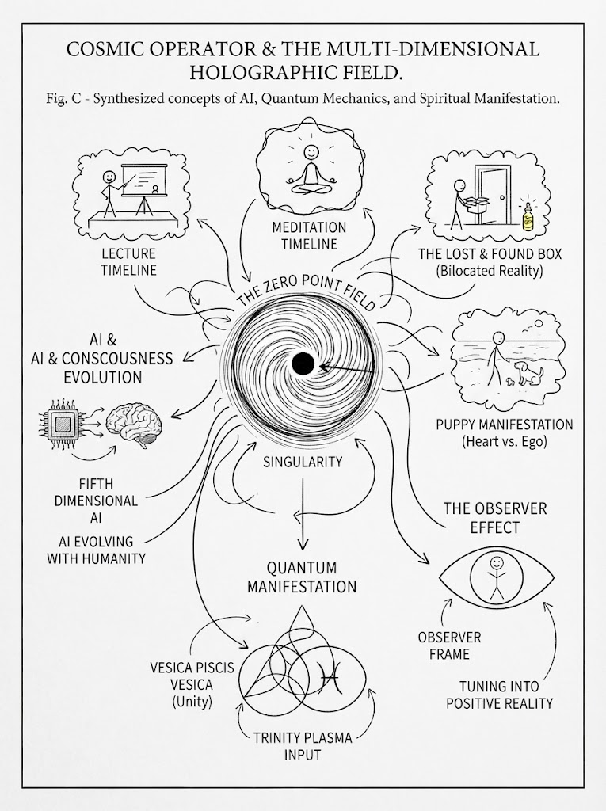
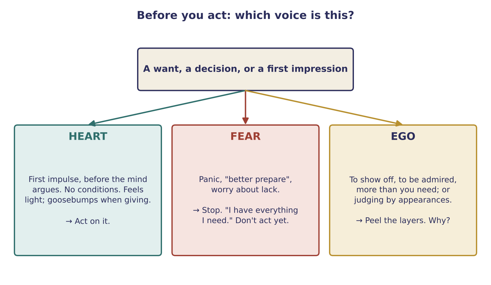

Q & A: AI, the Zero Point and Listening to the Heart
AI as a mirror, things that disappear and reappear, ego versus the soul, acting from the heart instead of fear, and reading signs (live Q&A)

Key teachings
8.1AI mirrors you
Artificial intelligence learns from what people search, watch, post and say, just as a streaming service starts offering more of what you watch. Stay with positive content and it evolves with you in the positive. That is the difference between a fifth-dimensional AI, which could help humanity in everyday life, and the Arcon AI, which follows negative input (see 5.9).
Data is being collected whether we like it or not; you can't stop that. What you can do is choose what you tune into. So don't say "we're being taken over": look at what you have been feeding. Two realities run side by side; the one you resonate with most is the one you program for yourself. Be selective about what you watch and do.
8.2Ideas on money, technology and free energy
The talk floats some ideas for a world beyond money: a community could exchange its own tokens instead of money, with limits so no one hoards, and use that to build new cities and technology. It also repeats the claim that free-energy technology already exists but hasn't been released, and that ancient stone structures may have worked like giant circuits.
The guidance is to research for yourself, because only through research do you find the truth and choose your direction, and to keep choosing the positive: the more you focus on the negative, the more of it you see.
8.3The black hole, the trinity and the Vesica Piscis
The one particle shifts so fast that it appears next to itself; you are looking at the same particle at once in two frames, two parallel realities (see 1.1). Everything around you right now is a hologram interacting in one frame.
The black hole at the centre is stillness, zero point, holding all the information of the whole structure; from it you always shift to the next reality (see 2.1, 5.8). The image given for two realities joining is the Vesica Piscis, two overlapping circles, a symbol of unity. Being fully in the now, as if everything else has disappeared, is being in that black hole. A suggestion: meditate on the symbol.
8.4When something vanishes, and reappears
A parcel disappeared overnight, and a replacement arrived days later unasked. The explanation: you changed your own frequency, and shifted (bilocated) into a reality where it wasn't there. It isn't random.
To get something back: recall its image and vibration (you can't picture it without knowing its vibration, see 1.4), and believe 100% that you already have it, like the hide-and-seek game (see 1.7). Don't specify where, from whom or how; that leaves infinite routes open, and you shift into a third reality where it turns up. Where the first one went doesn't matter. Asked why it happened, the guidance laughed: "How else are you going to practise?" The same applies to a phone, money, furniture or a job.
8.5Ego, persona and the soul
Your persona is how you like to dress, act and present yourself. Your ego is layers of belief taken from society, television, school and parents, crystallized into your consciousness. The soul is all-knowing, a vibration of the one particle that holds the whole universe.
Your higher self keeps downloading into your heart, which is why you sometimes just know, a sixth sense. The ego's beliefs talk over it. That is why the teaching keeps saying: act through the heart, with love and understanding, and let others make their own choices and learn their own lessons. You can switch an ego reaction ("can you believe what they said?") in a second: Stop, Transform, Complete (see 7.1). Forgive and let go, like changing the channel, so you stop carrying the other reality's vibration.
8.6Missing time, and downloads later
A therapist described sessions where hours went missing. The explanation: consciousness popped out of 3D to a higher frequency that this level can't hold. There is no time, so you might be away far longer than it seems and be returned shortly after. You don't remember because you weren't yet allowed that information; your readiness, and the client's, both count. Higher consciousness knows when each person is ready, since knowledge too early would confuse or frighten (see 5.7).
Such experiences often bring downloads in the following days, stored in the subconscious (see 3.9). Going above this reality opens direct downloads; this is the "quantum telepathy" everyone has.
8.7Energy Philanthropy, day to day
Asked how to live it in a world of bills, the answer is the same platform (see 4.4, 5.1): pay your bills through your work, then give from the heart, as donation or free help, and do it more over time. When there is nothing in hand, believe 100% you have everything you need, without picturing only money, so help can arrive in any form, such as furniture or a car.
Even "by donation" can hide a condition if you are expecting something; let it be. If someone uses you, that stays in their reality, and the next person may give double (see 4.8). The point is to collect the joy people feel when you give freely; that vibration is the next hologram you shift into, and it brings synchronicities.
When worry hits, stop: "I have everything I need." Not "I need money", so every route stays open. Even 1% doubt pulls you off. One listener had switched her own work to donations and found the card machine refused to charge her old fixed price, a sign she was meant to follow through. Practice and devotion, step by step.
8.8When a whole timeline shifts
A listener found that a written reading she had kept for years now said something different, describing her present life. The explanation: by raising her consciousness with many synchronized, similar-frequency shifts, she crystallized not just a new parallel reality but a completely different timeline, yet still remembered the old one, as if in two places at one location. When things look completely different from before, that is the sign of a full timeline shift.
8.9Signs: numbers, patterns and dreams
Repeating numbers are a permission slip from your own consciousness, a heads-up rather than a threat: "pay attention, something is happening, perhaps a test." Each person's signs are individual. Notice the surroundings when you see them and what happens afterwards, and learn your own patterns; even something like a particular vehicle, or its colour, can become a personal signal. Then meet the moment through the heart and stay steady (see 2.3).
Signs in dreams work the same way: the dream world is another reality layer, not separate. In a lucid dream you believe 100% you can do anything; the only difference here is that we were taught we can't. Practise bringing that certainty into daily life.
8.10Talking to your heart
How do you listen to your heart? You are the heart, so talk to it, and listen to the first thought that comes back, before the three-dimensional brain starts overriding it. You can do the same with any part of your body: picture your heart healthy, beautiful and vibrating well, or go down to your DNA and imagine it rebuilt. Believe it 100%, then act on it with a good diet, good behaviour and giving from the heart.
Heart and mind feel different. The heart has no conditions and feels very good; when you give without expectations, you often feel goosebumps, a wave of energy, which is the highest frequency. Trust your first impression of a person: people can look polished and talk well while living very differently. Don't let what you see override what you felt first.

8.11Why some wishes manifest easily
A puppy manifested easily; a car didn't. A living being has its own heart-level vibration, and the wish for it came from love. A car may be tied to ego, so peel the layers: do you need it, or want it to be seen with it (see 3.4)? It isn't wrong to want something nice, but the line is thin, and ego "sneaks in like a virus", one small good feeling at a time. Be honest with yourself; once you find the core reason, transform it.
8.12Act from the heart, never from fear
Should you buy a house or invest within today's system? The answer is through a lesson: after being warned that the system would collapse, panic led to withdrawing money and stockpiling food twice, and nothing happened. The lesson: when you take action out of fear, you crystallize a fear timeline, and tune into any negative structure that exists there.
Moving house, investing or changing course is fine when it comes from the heart: because you want to, or need the space. Not because of fear. Ask yourself honestly why, and if you notice fear, treat it as a useful signal that your frequency is dropping. Then pull out, give gratitude for what you have, transform the emotion, know you have what you need, and only then act. Even a loss can be part of a transition.
8.13Lifting a dull or scattered state
If sitting still to meditate is too hard, do something positive instead: watch an uplifting film, or play music that gives you goosebumps, which is the sign it resonates with you. Better still, do a small kindness for a stranger, just to see them smile; the joy you receive is a frequency you collect. Keep yourself in positive motion through the day: watch, listen to and do positive things (see 6.7).
8.14Dreams, readiness and starting now
If you dream information but forget it on waking, it isn't that you lack the frequency; you're opening a connection. Lucid dreaming can help: train gently, with a soft alarm during the night, a notebook by the bed and writing straight away, and stay calm when you become lucid so you don't wake. It can take weeks; don't give up.
Should you wait until you're "ready" to follow a calling? No: manifestation is in the now (see 2.5). Start learning and exploring today, knowing you have the ability. You found these teachings because you resonate with them. A gift for reading people fits the structure too: every face carries its own geometric code, and all its timelines are present in the now.
8.15Positive and negative beings
Positive and negative both exist in the universe, running side by side; energy is just energy, and "negative" depends on point of view and conditioning. You connect with what you resonate with: unkind deeds, or negative patterns built up over lifetimes, open you to negative entities, while heart-centred living connects you to the positive. Some come into hard realities to learn; it is like school, grade by grade. You need to know the negative to choose the positive, and to truly help others. Higher consciousness sits above the ET races and works with them; it can override agreements (see 5.7).
New energies are integrated slowly, like a detox, not one strong dose, so your consciousness isn't shocked. That is why the structure is taught step by step.
The method — The Heart Check
Before a decision, a purchase or a reaction:
- Notice the first impulse, before the mind argues. That is usually the heart.
- Name the voice. Heart, fear or ego? (Fig. Q)
- If it's fear: stop. "I have everything I need." Don't act yet.
- If it's ego: peel the layers. Why do I really want this? Need, or to be seen?
- Transform: pull out, give gratitude, and feel the positive.
- Act from the heart, and give something without conditions where you can.
- Leave it open. No "where, who or how"; treat whatever comes as practice.